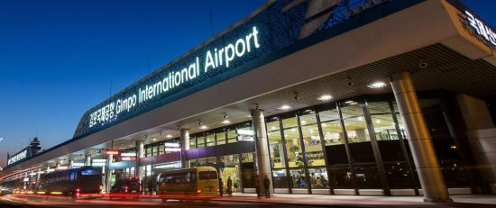
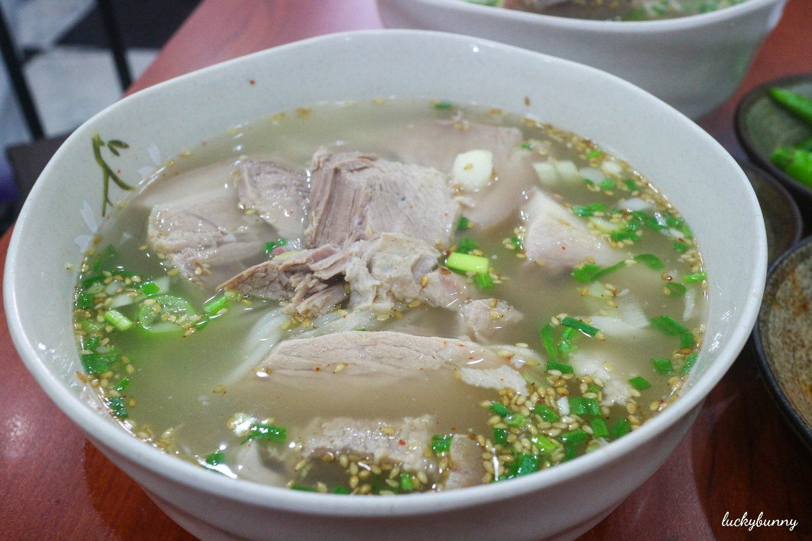
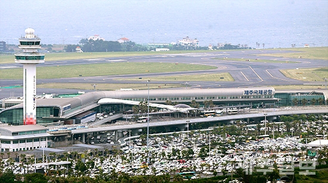

학교에서의 나는 충남대학교 응용생물학과를 주전공으로하고 컴퓨터 공학과를 복수전공하고 있는 학생이자 테니스동아리 good-shot의 회장을 맞고 있다. 자랑스런 아버지 밑에서 자라 아버지의 뒤를 잊는 경찰이 되고 싶다.경찰공무원의 인재상은 나의 자랑스러운 아버지 같은 사람이라고 자신 있게 말할 수 있다. 분명 섬세하고 분석적인 측면이 중요한 과학수사이지만 그 이전에 경찰이란 직책이 가지는 명예를 알아야한다고 생각한다. 경찰이라는 ‘민중의 지팡이’라고 불리는 명예로운 직업인 만큼 금전적인 부분은 떠나서 바름의 표본이 되는 경찰공무원이 되어야한다고 생각한다.
경찰공무원의 되는 법은 경찰공무원 시험을 통과한 뒤에 보직을 받는 경우와 경력경쟁채용을 통하여 자신의 전문적인 분야로 나아가는 방법이 있다. 경찰공무원 시험은 남성의 경우 군필자일경우 지원가능하고 점수를 순위를 매긴 뒤에 상위에서 합격과 불합격을 가른다
방안에서 공부를 하지 않는 날에는 주로 영화르 본다. 그중 기억에 남는작품을 꼽자면 다크나이트이다. 다크나이트중 조커가 첫등장에 가면을 벗고 처음 대사를 하는 장면이다. 클로즈업 쇼트를 사용하여 조커의 얼굴을 잡아주어서 조커의 얼굴의 독특한 인상을 관객들에게 전달하는 것 같다. 또한 앵글을 로우앵글을 사용하여 피해자의 시점에서 올려다보는 느낌을 주게한다.
다음 장면에선 장면은 이전 장면의 로우앵글과는 대비되는 효과를 주기위하여 피해자의 모습을 하이앵글을 이용하여 잡아준다. 그러므로 피해자의 모습으 더욱 약소하게 하며 그 모습을 조커의 어깨 넘어 보여주므로 이전장면과의 연속성을 부과하였다. 또한 조커의 얼굴을 바라보는 피해자의 얼굴을 클로즈업하여 인물의 당혹감의 감정을 관객들에게 전달한다. 이전장면에 이어지는 장면으로 다시 피해자의 시점으로 로우앵글을 사용하여 조커의 얼굴을 잡아주고 있다. 하지만 이전 조커의 얼굴을 잡아주는 장면과는 얼굴의 밝기가 더욱 밝아져서 조커의 얼굴 주름까지도 잡아주므로 점점 강조되는 장면을 표현하였다.
경기도 평택, 원래 계획이란게 없었지만 친할머니댁에서 가족들이 모이기로 해서 여행 같지도 않는 첫날이 끝났습니다. 둘째 날, 할머니 댁에서 나와 다시 평택역, 가장 가까운 시간의 기차가 여수엑스포행 기차였습니다. 탔습니다. 그대로 여수까지 갔습니다. 처음 타보는 입석이라 그냥 열차칸 사이칸에 있었는데 다른 내일로 사람들이 카페 칸에 모여 있었습니다. 창가에 자리가 나서 앉아서 앉아갈 수 있었습니다. 몇 시간 탔는지 기억도 안나고 궁금하지도 않았습니다. 남는 게 시간이었으니까요. 해질녘쯤에 여수엑스포에 도착했습니다. 여행 중에 찍은 사진을 보면 이때 사진이 가장 멀쩡하게 찍힌 사진이었습니다. 역사를 나왔습니다. 이때부터 고생길의 시작이었습니다. 아직 비가 오기 전, 습기가 미쳐 날뛰는 날씨였습니다. 점심도 먹지 않고 기차 카페에서 먹은 과자가 전부여서 일단 밥을 먹기로 합니다. 특산품이 게장이었던 것으로 기억합니다. 특산품 따위 무시하고 회덮밥을 먹었습니다. 그다음은 그래도 여행답게 여수밤바다를 즐겼습니다. 버스킹도 보고 다리도 보고 무슨 섬에도 그중에서 버스킹이 제일 기억에 남는군요. 이제 숙소를 정할 차례입니다. 가격은 성수기라 다 똑같아서 가장 귀여워 보이는 문양이 있는 곳에서 묵었습니다... 파티한다는 곳도 있었는데 더위에 지쳐서 샤워하고 잤습니다. 둘째날은 그래도 여행다웠습니다.
오전 아직도 비가 안내려서 찜통이 따로 없었습니다. 어제 못둘러본 여수 엑스포를 구 경해봅시다. 볼 거 없었습니다...다 유료였었으니까요 그냥 큰 O모양의 조형물 앞에서 인증샷을 찍고 다시 기차에 탑니다. 두 번째 목적지는 여수국제공항으로 하려다 순간의 변덕으로 순천으로 갔습니다. 그래도 가장 만족한 여행지입니다. 순천에서 부전행(부산방향)기차까지의 남은 시간은 얼마 되지 않았기 때문에 여러 여행지중 하나만 선택했어야 했습니다. 그중 순천만을 선택해 역에서 버스를 타고 순천만에 갔습니다. 가는 도중 외국인이 버스 기사님께 길을 물어 봤는데 기사님이 도움을 청하셔서 도와드린 일도 있었습니다. 순천만 정말 넓고 다보면 힘든데 그만한 가치가 있다고 할 정도로 마음에 들었고 좋았습니다. 순천만 앞에 롯데리아에서 버거를 먹는데 정말 롯데리아는 맛이 없었습니다. 그렇게 부전행 열차를 타고 부산으로 넘어가게 됩니다. 이때는 힘들어서 기차 안에서 기절한 듯 잤습니다. 부전에 도착하니 밤11시쯤이었던 것으로 기억합니다. 주위 음식점 중에 연 곳은 24시 돼지국밥집밖에 없고 돼지국밥도 먹어본적 없던 터라 먹어보았습니다. 일본 라멘국물이 생각나는 맛이었습니다, 그렇게 배를 채우고 내일로 할인을 해주는 찜질방에서 샤워를 하고 몸을 담구니 살맛나는 것 같았습니다. 그렇게 셋째 날이 끝났습니다. 제가 원하던 여행다웠습니다.
| 장소 | 여행수첩 | |||
|---|---|---|---|---|
| 여행일정 | 참고사이트 | 여행지그림 | ||
| 제주도 | 첫째 날 |
|
김포공항할인 |  |
| 둘째날 |
|
제주맛집 |  | |
| 셋째 날 |
|
제주국제공항꿀팁 |  | |